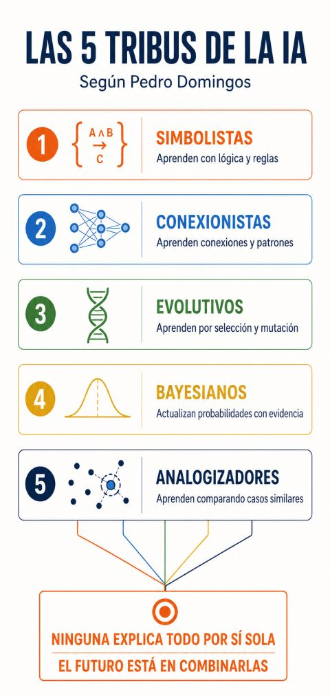

No existe una sola manera de construir inteligencia artificial. Una red neuronal que reconoce patrones, un sistema que razona con reglas y un modelo que actualiza probabilidades pueden abordar aspectos distintos de un mismo problema. Para una empresa industrial, entender esas diferencias ayuda a formular mejores preguntas antes de elegir una tecnología.
En The Master Algorithm, Pedro Domingos organiza cinco tradiciones del aprendizaje automático en «tribus»: simbolistas, conexionistas, evolutivos, bayesianos y analogizadores. Es un marco divulgativo para comparar ideas, no una clasificación exhaustiva ni una frontera rígida entre todas las técnicas actuales. El autor presenta su búsqueda de una síntesis en el prólogo del libro.
Las aplicaciones industriales que siguen son ejemplos orientativos de Antal M, no casos de clientes ni resultados medidos. Sirven para pensar cómo se relacionan los mecanismos de aprendizaje con las restricciones, la información disponible y las decisiones de una planta.
Un mapa para conversar sobre inteligencia artificial
La infografía resume la propuesta de Domingos. Su conclusión sobre combinar enfoques debe leerse como una dirección posible de investigación y diseño, no como una garantía de que cualquier combinación funcionará mejor.


Infografía proporcionada para esta publicación. Abrir a tamaño completo.
Simbolistas: conocimiento que puede expresarse
Los simbolistas trabajan con representaciones explícitas y relaciones lógicas. En aprendizaje simbólico, el objetivo puede ser inducir reglas a partir de ejemplos; no se reduce a programar manualmente una lista de instrucciones. La explicación de las cinco escuelas que Domingos presentó en el seminario del MIT permite situar esta tradición junto a las demás.
En un ejemplo industrial, ciertas condiciones de liberación de una orden podrían expresarse como reglas que relacionan materiales, autorizaciones y estado del proceso. Su fortaleza sería permitir revisar qué condición se cumplió y cuál falta. Su limitación aparece cuando el conocimiento es incompleto, cambian las excepciones o resulta difícil traducir una observación visual a conceptos precisos.
Una regla visible facilita una parte de la revisión, pero no demuestra que sea correcta. Conviene preguntar quién la validó, cuándo debe actualizarse y qué sucede si dos condiciones entran en conflicto.
Conexionistas: aprender representaciones y patrones
Los conexionistas utilizan redes de unidades conectadas cuyos parámetros se ajustan durante el aprendizaje. En lugar de especificar cada relación de antemano, se buscan representaciones que ayuden a resolver una tarea. Esto no significa que el sistema comprenda el proceso como lo hace un especialista.
Una aplicación orientativa sería aprender patrones visuales a partir de imágenes de piezas. La fortaleza potencial es representar relaciones que sería laborioso describir una por una. La limitación práctica es que una buena evaluación con unas imágenes no asegura el mismo comportamiento con otra iluminación, otra cámara o una familia distinta de componentes.
El equipo debería revisar ejemplos difíciles y condiciones de captura, además del indicador agregado. La cantidad de capas o parámetros no sustituye la necesidad de comprobar el resultado en el contexto donde se utilizará.
Evolutivos: explorar alternativas mediante selección
Los enfoques evolutivos exploran poblaciones de candidatos mediante variaciones y selección. Una función de evaluación orienta qué alternativas se conservan. La analogía con la evolución resulta útil para explicar el mecanismo, aunque un algoritmo no reproduce toda la complejidad de un sistema biológico.
Podrían explorarse distintas configuraciones de un proceso bajo un conjunto de restricciones. Su atractivo sería comparar alternativas en un espacio difícil de recorrer manualmente. La principal cautela es la calidad de la evaluación: si esta premia un objetivo incompleto, la búsqueda puede favorecer una configuración poco conveniente para la operación.
También hay que considerar el costo de evaluar candidatos. Un simulador lento o una prueba física costosa cambia la viabilidad del método. Encontrar una alternativa prometedora no equivale a demostrar que sea la mejor posible ni autoriza a aplicarla sin validación.
Bayesianos: actualizar creencias con evidencia
La perspectiva bayesiana representa incertidumbre mediante probabilidades y las actualiza cuando llega evidencia. El punto de partida y los supuestos importan: incorporar un dato nuevo no vuelve automáticamente confiable una estimación.
En una situación industrial hipotética, un equipo podría revisar la plausibilidad de diferentes causas de una desviación conforme obtiene mediciones. La fortaleza sería mantener explícita la incertidumbre, en lugar de convertir indicios parciales en una afirmación categórica. La limitación estaría en los supuestos, la representatividad de la evidencia y la dificultad de construir un modelo adecuado.
Para decidir, no basta con preguntar cuál causa parece más probable. También importa qué acción es reversible, cuánto cuesta equivocarse y qué medición adicional permitiría distinguir mejor entre explicaciones.
Analogizadores: aprender a partir de semejanzas
Los analogizadores se apoyan en similitudes entre casos. La cuestión central es cómo representar y comparar lo observado: dos registros cercanos numéricamente no necesariamente describen situaciones equivalentes desde el punto de vista del proceso.
Un ejemplo sería buscar antecedentes operativos parecidos a una situación actual para apoyar la revisión de un especialista. Su fortaleza potencial es conectar la consulta con experiencias observables. Su límite aparece si los antecedentes son escasos o si la semejanza elegida ignora una diferencia decisiva, como material, equipo o condición ambiental.
La pregunta profesional sería «¿parecido en qué y para qué?». Mostrar el antecedente puede ayudar a examinar una recomendación, pero no prueba que la causa ni la solución sean transferibles al caso nuevo.
Combinar enfoques exige definir responsabilidades
Una arquitectura podría usar aprendizaje para interpretar observaciones, reglas para verificar restricciones y un componente probabilístico para expresar incertidumbre. Esa composición es una hipótesis de diseño, no una receta universal. Debe compararse con alternativas más sencillas bajo los mismos criterios.
Combinar puede aportar capacidades complementarias y, al mismo tiempo, aumentar interfaces, dependencias y trabajo de mantenimiento. La investigación sobre deuda técnica en sistemas de aprendizaje automático recuerda que los problemas también viven en las conexiones del sistema. Una arquitectura híbrida no garantiza mayor precisión ni una explicación más comprensible.
Conviene decidir qué componente propone, cuál verifica, cómo se resuelven desacuerdos y cuándo interviene una persona. Si una recomendación es rechazada por una regla, el usuario necesita entender el motivo y saber qué hacer a continuación.
La mejor pregunta empieza en tu operación
La utilidad del mapa de Domingos está en ampliar la conversación. Antes de elegir una tribu, conviene precisar la decisión, los datos, las restricciones y el costo de los errores. A veces bastará un enfoque; otras veces será razonable combinar varios y medir qué aporta cada uno.
¿Qué enfoques crees que serán más relevantes para tu industria y cómo combinarías lo mejor de ellos? Esa pregunta abre una conversación más útil que buscar una tecnología ganadora para cualquier problema.
Contáctanos para explorar una aplicación personalizada de IA ↗
Artículo original de Antal M. Las referencias técnicas se enlazan junto a los pasajes correspondientes. Los ejemplos industriales son orientativos.